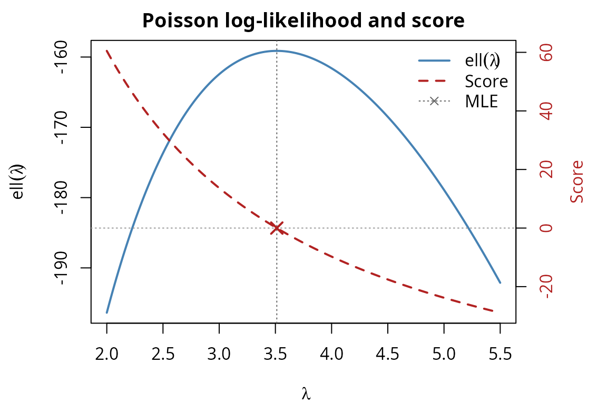
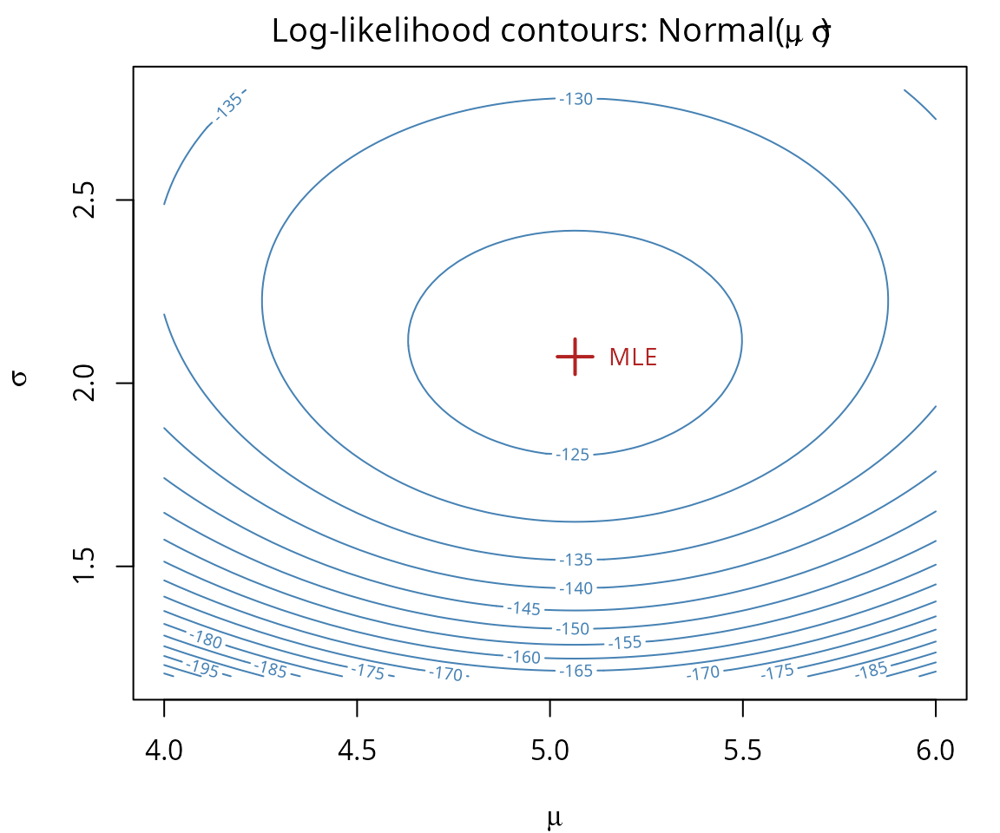
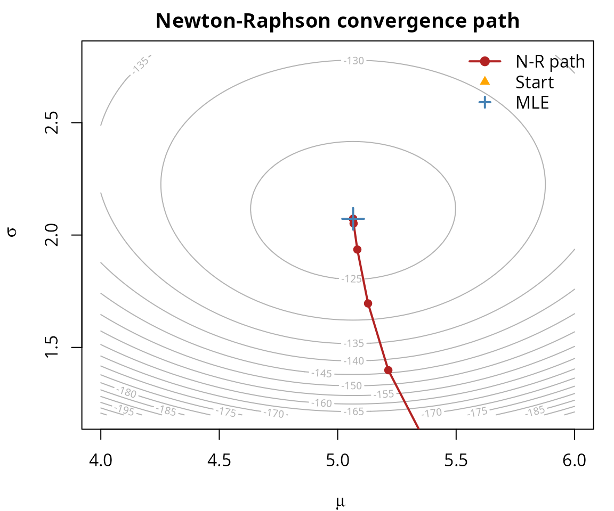

library(dualr)
#>
#> Attaching package: 'dualr'
#> The following object is masked from 'package:stats':
#>
#> derivThis vignette demonstrates dualr’s MLE helper functions
on several statistical models. For each model, we compare derivatives
computed three ways:
score() and hessian()
We’ll use central differences for numerical comparison:
numerical_gradient <- function(f, x, h = 1e-7) {
p <- length(x)
grad <- numeric(p)
for (i in seq_len(p)) {
x_plus <- x_minus <- x
x_plus[i] <- x[i] + h
x_minus[i] <- x[i] - h
grad[i] <- (f(x_plus) - f(x_minus)) / (2 * h)
}
grad
}
numerical_hessian <- function(f, x, h = 1e-5) {
p <- length(x)
H <- matrix(0, nrow = p, ncol = p)
for (i in seq_len(p)) {
for (j in seq_len(i)) {
x_pp <- x_pm <- x_mp <- x_mm <- x
x_pp[i] <- x_pp[i] + h; x_pp[j] <- x_pp[j] + h
x_pm[i] <- x_pm[i] + h; x_pm[j] <- x_pm[j] - h
x_mp[i] <- x_mp[i] - h; x_mp[j] <- x_mp[j] + h
x_mm[i] <- x_mm[i] - h; x_mm[j] <- x_mm[j] - h
H[i, j] <- (f(x_pp) - f(x_pm) - f(x_mp) + f(x_mm)) / (4 * h * h)
H[j, i] <- H[i, j]
}
}
H
}The simplest model. Given data with known , the log-likelihood for is:
Using sufficient statistics (, ), this simplifies.
set.seed(42)
data_norm <- rnorm(100, mean = 5, sd = 2)
n <- length(data_norm)
sigma <- 2
sum_x <- sum(data_norm)
sum_x2 <- sum(data_norm^2)
ll_normal_mu <- function(theta) {
mu <- theta[1]
-1 / (2 * sigma^2) * (sum_x2 - 2 * mu * sum_x + n * mu^2)
}
# Evaluate at mu = 4.5
mu0 <- 4.5
# AD score and Hessian
ad_score <- score(ll_normal_mu, mu0)
ad_hess <- hessian(ll_normal_mu, mu0)
# Analytical: score = (sum_x - n*mu)/sigma^2, Hessian = -n/sigma^2
xbar <- mean(data_norm)
analytical_score <- (sum_x - n * mu0) / sigma^2
analytical_hess <- -n / sigma^2
# Numerical
num_score <- numerical_gradient(ll_normal_mu, mu0)
num_hess <- numerical_hessian(ll_normal_mu, mu0)
# Three-way comparison: Score
data.frame(
method = c("Analytical", "Finite Diff", "AD"),
score = c(analytical_score, num_score, ad_score)
)
#> method score
#> 1 Analytical 14.12574
#> 2 Finite Diff 14.12574
#> 3 AD 14.12574
# Three-way comparison: Hessian
data.frame(
method = c("Analytical", "Finite Diff", "AD"),
hessian = c(analytical_hess, num_hess, ad_hess)
)
#> method hessian
#> 1 Analytical -25.00000
#> 2 Finite Diff -24.99974
#> 3 AD -25.00000All three methods agree to machine precision for this simple quadratic log-likelihood. The score is linear in and the Hessian is constant (), so there are no higher-order terms for finite differences to approximate poorly. This model serves as a sanity check that the AD machinery is wired correctly.
The observed_information() function returns the negative
Hessian:
obs_info <- observed_information(ll_normal_mu, mu0)
obs_info # should equal n/sigma^2 = 25
#> [,1]
#> [1,] 25Now both and are unknown. The log-likelihood is:
ll_normal_2 <- function(theta) {
mu <- theta[1]
sigma <- theta[2]
-n * log(sigma) - (1 / (2 * sigma^2)) * (sum_x2 - 2 * mu * sum_x + n * mu^2)
}
theta0 <- c(4.5, 1.8)
# AD
ad_score2 <- score(ll_normal_2, theta0)
ad_hess2 <- hessian(ll_normal_2, theta0)
# Analytical score:
# d/dmu = n*(xbar - mu)/sigma^2
# d/dsigma = -n/sigma + (1/sigma^3)*sum((xi - mu)^2)
mu0_2 <- theta0[1]; sigma0_2 <- theta0[2]
ss <- sum_x2 - 2 * mu0_2 * sum_x + n * mu0_2^2 # sum of (xi - mu)^2
analytical_score2 <- c(
n * (xbar - mu0_2) / sigma0_2^2,
-n / sigma0_2 + ss / sigma0_2^3
)
# Analytical Hessian:
# d2/dmu2 = -n/sigma^2
# d2/dsigma2 = n/sigma^2 - 3*ss/sigma^4
# d2/dmu.dsigma = -2*n*(xbar - mu)/sigma^3
analytical_hess2 <- matrix(c(
-n / sigma0_2^2,
-2 * n * (xbar - mu0_2) / sigma0_2^3,
-2 * n * (xbar - mu0_2) / sigma0_2^3,
n / sigma0_2^2 - 3 * ss / sigma0_2^4
), nrow = 2, byrow = TRUE)
# Numerical
num_score2 <- numerical_gradient(ll_normal_2, theta0)
num_hess2 <- numerical_hessian(ll_normal_2, theta0)
# Score comparison
data.frame(
parameter = c("mu", "sigma"),
analytical = analytical_score2,
finite_diff = num_score2,
AD = ad_score2
)
#> parameter analytical finite_diff AD
#> 1 mu 17.43919 17.43919 17.43919
#> 2 sigma 23.55245 23.55245 23.55245
# Hessian comparison (flatten for display)
cat("AD Hessian:\n")
#> AD Hessian:
ad_hess2
#> [,1] [,2]
#> [1,] -30.86420 -19.37687
#> [2,] -19.37687 -100.98248
cat("\nAnalytical Hessian:\n")
#>
#> Analytical Hessian:
analytical_hess2
#> [,1] [,2]
#> [1,] -30.86420 -19.37687
#> [2,] -19.37687 -100.98248
cat("\nMax absolute difference:", max(abs(ad_hess2 - analytical_hess2)), "\n")
#>
#> Max absolute difference: 2.842171e-14The maximum absolute difference between the AD and analytical Hessians is at the level of machine epsilon (), confirming that AD computes exact second derivatives even for this two-parameter model. The cross-derivative is non-zero when , exercising the mixed-partial logic in nested dual arithmetic.
Given count data from Poisson():
set.seed(123)
data_pois <- rpois(80, lambda = 3.5)
n_pois <- length(data_pois)
sum_x_pois <- sum(data_pois)
sum_lfact <- sum(lfactorial(data_pois))
ll_poisson <- function(theta) {
lambda <- theta[1]
sum_x_pois * log(lambda) - n_pois * lambda - sum_lfact
}
lam0 <- 3.0
# AD
ad_score_p <- score(ll_poisson, lam0)
ad_hess_p <- hessian(ll_poisson, lam0)
# Analytical: score = sum_x/lambda - n, Hessian = -sum_x/lambda^2
analytical_score_p <- sum_x_pois / lam0 - n_pois
analytical_hess_p <- -sum_x_pois / lam0^2
# Numerical
num_score_p <- numerical_gradient(ll_poisson, lam0)
num_hess_p <- numerical_hessian(ll_poisson, lam0)
data.frame(
quantity = c("Score", "Hessian"),
analytical = c(analytical_score_p, analytical_hess_p),
finite_diff = c(num_score_p, num_hess_p),
AD = c(ad_score_p, ad_hess_p)
)
#> quantity analytical finite_diff AD
#> 1 Score 13.66667 13.66667 13.66667
#> 2 Hessian -31.22222 -31.22238 -31.22222Again, all three methods agree exactly. The Poisson log-likelihood
involves only log(lambda) and linear terms in
,
so the sufficient statistics produce clean rational expressions for the
score and Hessian — making this an ideal test case for verifying AD
correctness.
The score (gradient) of a log-likelihood is zero at the MLE. We can see this by plotting the log-likelihood and its score together:
lam_grid <- seq(2.0, 5.5, length.out = 200)
# Compute log-likelihood and score over the grid
ll_vals <- sapply(lam_grid, function(l) ll_poisson(l))
sc_vals <- sapply(lam_grid, function(l) score(ll_poisson, l))
mle_lam <- sum_x_pois / n_pois # analytical MLE
par(mar = c(4, 4.5, 2, 4.5))
plot(lam_grid, ll_vals, type = "l", col = "steelblue", lwd = 2,
xlab = expression(lambda), ylab = expression(ell(lambda)),
main = "Poisson log-likelihood and score")
par(new = TRUE)
plot(lam_grid, sc_vals, type = "l", col = "firebrick", lwd = 2, lty = 2,
axes = FALSE, xlab = "", ylab = "")
axis(4, col.axis = "firebrick")
mtext("Score", side = 4, line = 2.5, col = "firebrick")
abline(h = 0, col = "grey60", lty = 3)
abline(v = mle_lam, col = "grey40", lty = 3)
points(mle_lam, 0, pch = 4, col = "firebrick", cex = 1.5, lwd = 2)
legend("topright",
legend = c(expression(ell(lambda)), "Score", "MLE"),
col = c("steelblue", "firebrick", "grey40"),
lty = c(1, 2, 3), lwd = c(2, 2, 1), pch = c(NA, NA, 4),
bty = "n")
The score crosses zero exactly at the MLE (), confirming that our AD-computed gradient is consistent with the analytical solution.
The Gamma distribution with shape and known rate has log-likelihood:
This is interesting because it involves lgamma and
digamma.
set.seed(99)
data_gamma <- rgamma(60, shape = 2.5, rate = 1)
n_gam <- length(data_gamma)
sum_log_x <- sum(log(data_gamma))
sum_x_gam <- sum(data_gamma)
beta_known <- 1
ll_gamma <- function(theta) {
alpha <- theta[1]
(alpha - 1) * sum_log_x - n_gam * lgamma(alpha) +
n_gam * alpha * log(beta_known) - beta_known * sum_x_gam
}
alpha0 <- 2.0
# AD
ad_score_g <- score(ll_gamma, alpha0)
ad_hess_g <- hessian(ll_gamma, alpha0)
# Analytical: score = sum_log_x - n*digamma(alpha) + n*log(beta)
# Hessian = -n*trigamma(alpha)
analytical_score_g <- sum_log_x - n_gam * digamma(alpha0) + n_gam * log(beta_known)
analytical_hess_g <- -n_gam * trigamma(alpha0)
# Numerical
num_score_g <- numerical_gradient(ll_gamma, alpha0)
num_hess_g <- numerical_hessian(ll_gamma, alpha0)
data.frame(
quantity = c("Score", "Hessian"),
analytical = c(analytical_score_g, analytical_hess_g),
finite_diff = c(num_score_g, num_hess_g),
AD = c(ad_score_g, ad_hess_g)
)
#> quantity analytical finite_diff AD
#> 1 Score 16.97943 16.97943 16.97943
#> 2 Hessian -38.69604 -38.69602 -38.69604The Gamma model is a key differentiator between AD and finite
differences. The log-likelihood involves lgamma(alpha),
whose derivatives are digamma and trigamma —
special functions that dualr propagates exactly through the
chain rule. With finite differences, choosing a good step size
for lgamma is tricky: too large introduces truncation error
in the rapidly-varying digamma function, too small amplifies round-off.
AD sidesteps this entirely by computing the exact digamma
and trigamma values at each evaluation point.
For a binary response with design matrix and coefficients :
set.seed(7)
n_lr <- 50
X <- cbind(1, rnorm(n_lr), rnorm(n_lr)) # intercept + 2 predictors
beta_true <- c(-0.5, 1.2, -0.8)
eta_true <- X %*% beta_true
prob_true <- 1 / (1 + exp(-eta_true))
y <- rbinom(n_lr, 1, prob_true)
ll_logistic <- function(theta) {
result <- dual_constant(0)
for (i in seq_len(n_lr)) {
eta_i <- theta[1] * X[i, 1] + theta[2] * X[i, 2] + theta[3] * X[i, 3]
result <- result + y[i] * eta_i - log(1 + exp(eta_i))
}
result
}
beta0 <- c(0, 0, 0)
# AD
ad_score_lr <- score(ll_logistic, beta0)
ad_hess_lr <- hessian(ll_logistic, beta0)
# Numerical
ll_logistic_num <- function(beta) {
eta <- X %*% beta
sum(y * eta - log(1 + exp(eta)))
}
num_score_lr <- numerical_gradient(ll_logistic_num, beta0)
num_hess_lr <- numerical_hessian(ll_logistic_num, beta0)
# Score comparison
data.frame(
parameter = c("beta0", "beta1", "beta2"),
finite_diff = num_score_lr,
AD = ad_score_lr,
difference = ad_score_lr - num_score_lr
)
#> parameter finite_diff AD difference
#> 1 beta0 -2.00000 -2.00000 -1.215494e-08
#> 2 beta1 11.10628 11.10628 -7.302688e-09
#> 3 beta2 -10.28118 -10.28118 2.067073e-08
# Hessian comparison
cat("Max |AD - numerical| in Hessian:", max(abs(ad_hess_lr - num_hess_lr)), "\n")
#> Max |AD - numerical| in Hessian: 2.56111e-05The numerical Hessian difference () is noticeably larger than in the earlier models. This is because the logistic log-likelihood is computed via a loop over observations, and each finite-difference perturbation accumulates small errors across all iterations. AD remains exact regardless of the number of loop iterations — each arithmetic operation propagates derivatives without approximation.
We can build a simple optimizer using score() and
hessian() directly. Newton-Raphson updates:
where
is the score and
is the Hessian.
newton_raphson <- function(loglik, theta0, tol = 1e-8, max_iter = 50) {
theta <- theta0
for (iter in seq_len(max_iter)) {
s <- score(loglik, theta)
H <- hessian(loglik, theta)
step <- solve(H, s)
theta <- theta - step
if (max(abs(s)) < tol) break
}
list(estimate = theta, iterations = iter, score = s)
}
# Apply to Normal(mu, sigma) model
result_nr <- newton_raphson(ll_normal_2, c(3, 1))
result_nr$estimate
#> [1] 5.065030 2.072274
result_nr$iterations
#> [1] 10
# Compare with analytical MLE
mle_mu <- mean(data_norm)
mle_sigma <- sqrt(mean((data_norm - mle_mu)^2)) # MLE (not sd())
cat("NR estimate: mu =", result_nr$estimate[1], " sigma =", result_nr$estimate[2], "\n")
#> NR estimate: mu = 5.06503 sigma = 2.072274
cat("Analytical MLE: mu =", mle_mu, " sigma =", mle_sigma, "\n")
#> Analytical MLE: mu = 5.06503 sigma = 2.072274
cat("Max difference:", max(abs(result_nr$estimate - c(mle_mu, mle_sigma))), "\n")
#> Max difference: 1.776357e-15The two-parameter Normal model has a log-likelihood surface we can visualize with contours. The MLE sits at the peak:
mu_grid <- seq(4.0, 6.0, length.out = 80)
sigma_grid <- seq(1.2, 2.8, length.out = 80)
# Evaluate log-likelihood on the grid
ll_surface <- outer(mu_grid, sigma_grid, Vectorize(function(m, s) {
ll_normal_2(c(m, s))
}))
par(mar = c(4, 4, 2, 1))
contour(mu_grid, sigma_grid, ll_surface, nlevels = 25,
xlab = expression(mu), ylab = expression(sigma),
main = expression("Log-likelihood contours: Normal(" * mu * ", " * sigma * ")"),
col = "steelblue")
points(mle_mu, mle_sigma, pch = 3, col = "firebrick", cex = 2, lwd = 2)
text(mle_mu + 0.15, mle_sigma, "MLE", col = "firebrick", cex = 0.9)
We can visualize how Newton-Raphson converges to the MLE by recording the parameter estimates at each iteration and overlaying them on the contour plot:
# Newton-Raphson with trace
newton_raphson_trace <- function(loglik, theta0, tol = 1e-8, max_iter = 50) {
theta <- theta0
trace <- list(theta)
for (iter in seq_len(max_iter)) {
s <- score(loglik, theta)
H <- hessian(loglik, theta)
step <- solve(H, s)
theta <- theta - step
trace[[iter + 1L]] <- theta
if (max(abs(s)) < tol) break
}
list(estimate = theta, iterations = iter, trace = do.call(rbind, trace))
}
result_trace <- newton_raphson_trace(ll_normal_2, c(3, 1))
par(mar = c(4, 4, 2, 1))
contour(mu_grid, sigma_grid, ll_surface, nlevels = 25,
xlab = expression(mu), ylab = expression(sigma),
main = "Newton-Raphson convergence path",
col = "grey70")
lines(result_trace$trace[, 1], result_trace$trace[, 2],
col = "firebrick", lwd = 2, type = "o", pch = 19, cex = 0.8)
points(result_trace$trace[1, 1], result_trace$trace[1, 2],
pch = 17, col = "orange", cex = 1.5)
points(mle_mu, mle_sigma, pch = 3, col = "steelblue", cex = 2, lwd = 2)
legend("topright",
legend = c("N-R path", "Start", "MLE"),
col = c("firebrick", "orange", "steelblue"),
pch = c(19, 17, 3), lty = c(1, NA, NA), lwd = c(2, NA, 2),
bty = "n")
Newton-Raphson converges in 10 iterations — fast quadratic convergence is a hallmark of having exact gradient and Hessian information from AD.
score_and_hessian(): differentiating the score
When you have an analytical score function,
score_and_hessian() differentiates it to obtain the
Hessian. This is useful when the score has been simplified by hand.
# Analytical score for Normal(mu, sigma) model
score_normal <- function(theta) {
mu <- theta[1]
sigma <- theta[2]
s_mu <- (sum_x - n * mu) / sigma^2
s_sigma <- -n / sigma + (sum_x2 - 2 * mu * sum_x + n * mu^2) / sigma^3
list(s_mu, s_sigma)
}
# Differentiate the score to get Hessian
result_sh <- score_and_hessian(score_normal, theta0)
result_sh$score
#> [1] 17.43919 23.55245
# Compare with hessian() applied to log-likelihood
hess_from_ll <- hessian(ll_normal_2, theta0)
cat("Hessian from score_and_hessian():\n")
#> Hessian from score_and_hessian():
result_sh$hessian
#> [,1] [,2]
#> [1,] -30.86420 -19.37687
#> [2,] -19.37687 -100.98248
cat("\nHessian from hessian(ll):\n")
#>
#> Hessian from hessian(ll):
hess_from_ll
#> [,1] [,2]
#> [1,] -30.86420 -19.37687
#> [2,] -19.37687 -100.98248
cat("\nMax absolute difference:", max(abs(result_sh$hessian - hess_from_ll)), "\n")
#>
#> Max absolute difference: 3.552714e-15The two approaches should agree to machine precision, since both use exact AD — one differentiates the log-likelihood twice, the other differentiates the score once.
Across five models of increasing complexity, several patterns emerge:
lgamma in Gamma),
or loops over observations (logistic regression), score()
and hessian() return exact results.score_and_hessian() is useful when the score
has been simplified by hand. It avoids differentiating the full
log-likelihood twice, instead differentiating the (simpler) score
function once to obtain the Hessian.